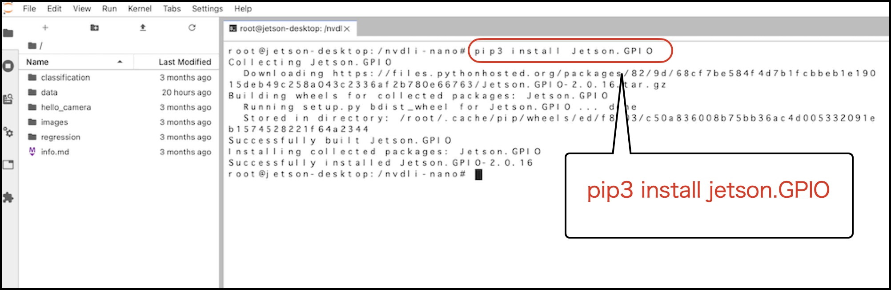

GPIOの有効化
Jetson NanoでAIを始めるを無事終了したら、再度 Jetson Nanoを再起動します。
Jetson Nano 2GBへのログイン
ssh jetson@192.168.55.1
| Password |
|---|
| jetson |
Dockerを起動
--privilegedオプションをつけて、再びDockerを起動します。
sudo docker run --runtime nvidia -it --rm --network host \
--volume ~/nvdli-data:/nvdli-nano/data \
--device /dev/video0 \
--privileged \
nvcr.io/nvidia/dli/dli-nano-ai:v2.0.1-r32.5.0
JupyterLabへの接続
http://192.168.55.1:8888 にChromeで接続し、JupuyterLabに接続します。
| Password |
|---|
| dlinano |
GPIOの設定


Jetson.GPIOのインストール
pip3 install Jetson.GPIO